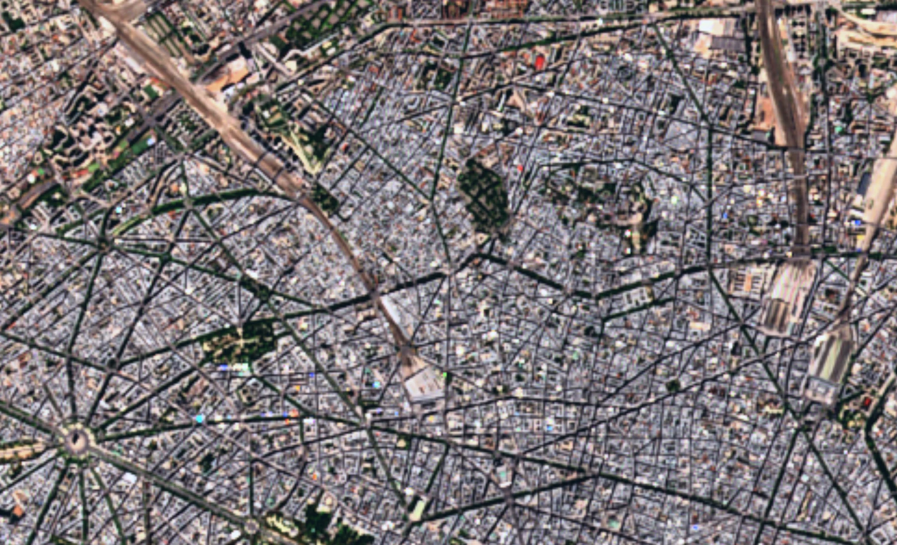
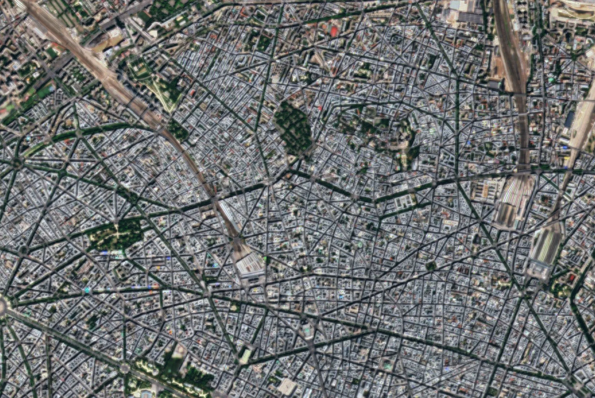
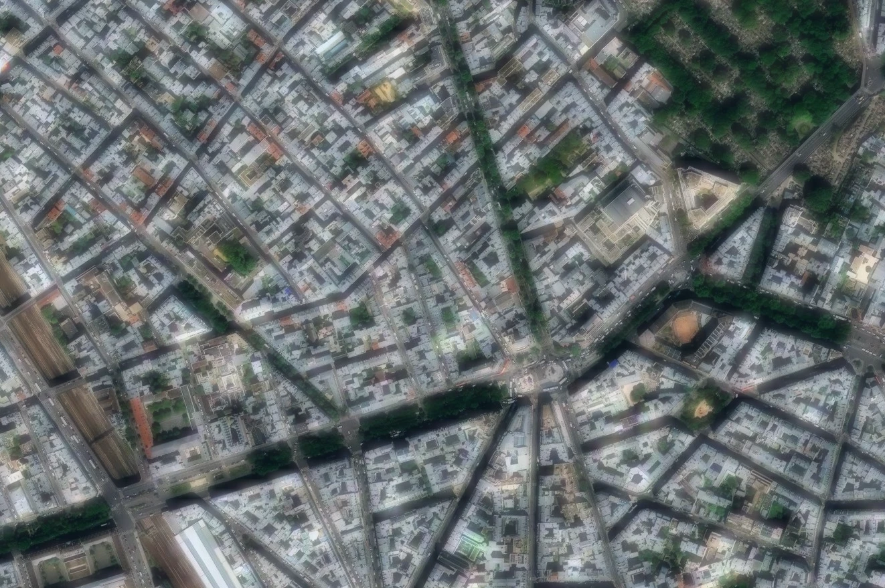
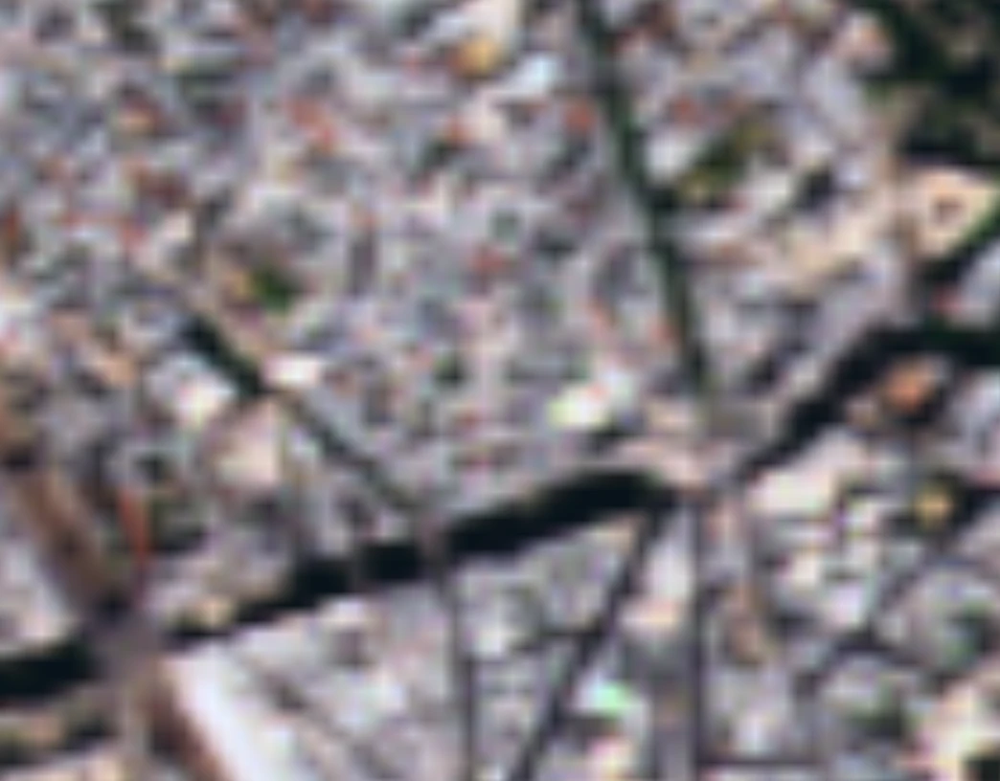
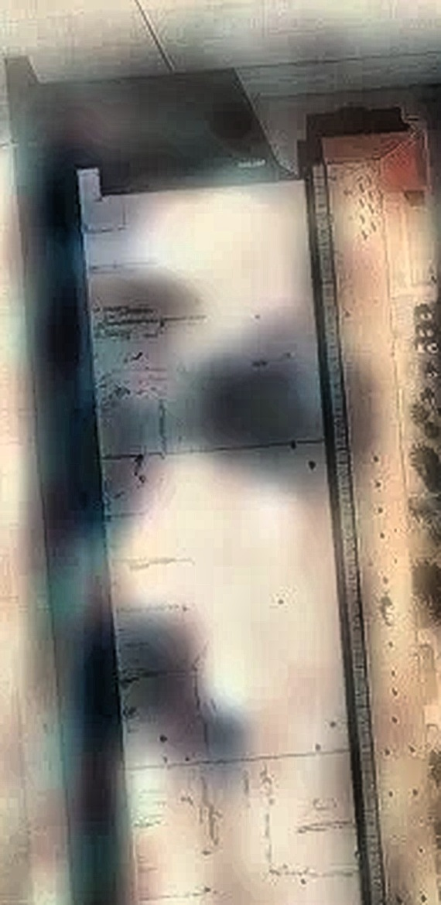

A free way to look at the Earth from orbit. Pick a place, pick a day — or let six passes be solved into one picture sharper than any of them.

A satellite never samples the same ground twice in exactly the same place. Each pass lands its pixel grid a fraction of a pixel differently, so every date is a slightly different measurement of the same street. Solve them together and the answer is finer than any one of them could be.
Measured, not asserted. The six passes here were made by sampling one sharp picture of Paris coarsely six times, each with its grid landed a third of a pixel apart — the same way the app's own tests check it — and then fusing them with the app's real code. Because the sharp original is known, the result can be scored against it: fine detail matching the ground rose from 0.658 to 0.778, and the error against it fell by 16%.
Brightening a picture by curving red, green and blue separately makes them climb at different rates — and the ratios between them are what colour is. Warm roofs slide towards orange, then yellow, then white. EarthViewer curves the whole pixel at once instead, so brightness moves and hue does not.
Both sides are the same pixels, brightened by the same amount. Across this frame the per-channel version moves the hue by 2.4° on average; the whole-pixel version moves it by 0.0°. On strongly lifted, saturated ground the per-channel drift reaches 21.9°.
The same city at the scale you actually want it: boulevards and rail yards from above, then close enough to pick out courtyards, street trees and the traffic on the junction.


Not every pass is a good one. The same city, photographed two ways: one frame where the detail never made it, and one where it did. This is the difference the merge above is trying to close.

Measured as fine structure against coarse, which is a ratio and so does not depend on how much ground each frame covers. These are two different parts of Paris, not the same street twice — checked, and they do not overlap, so this is a comparison of quality rather than a before and after. For the same ground two ways, drag the handle further up the page.
An airbase, after a reported strike. This is the hangar roof at full magnification, sharpened with the same local-contrast and detail tools the app applies to any imagery — nothing added, nothing painted on but the two rings.
Both punctures sit well inside the roof panel, clear of its shadowed edges, which is what separates a hole from the dark of an eave. They were found by measurement rather than by eye: the roof's own brightness taken as the baseline, and anything markedly darker than it, fully surrounded by roof, picked out.

Sentinel-1 measures the ground with radar, so cloud, smoke and darkness make no difference. Put it beside the optical view and slide between them.
Today's sky from NASA, with the land and sea cut out of it — weather over your imagery instead of a second basemap under it.
Every thermal detection NASA has published in the last day, sized by how much energy the fire is actually radiating.
Right-click anywhere. Worked out from the passes already flown over that point, not from a nominal cycle.
The picture is a rendering; underneath are numbers with units. A click gives you reflectance, backscatter in decibels, NDVI and the rest.
Highlight any part of the imagery and it lands on your clipboard at full resolution, watermarked.
One Python file. It installs what it needs on first run and opens in its own window. No sign-up, no API key, no token — the imagery is public and so is the catalogue.
git clone https://github.com/Inasjackw321/Sent-2-imagery cd Sent-2-imagery python app.py
Add --demo to explore it offline with synthetic imagery.